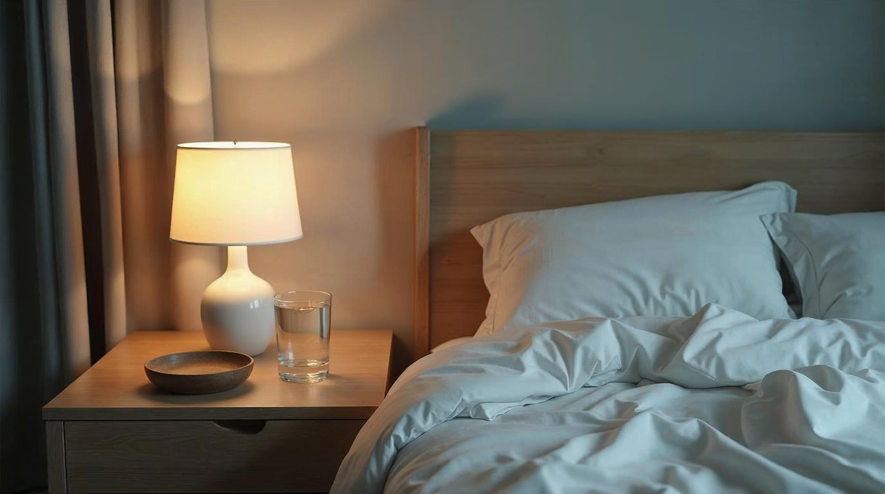
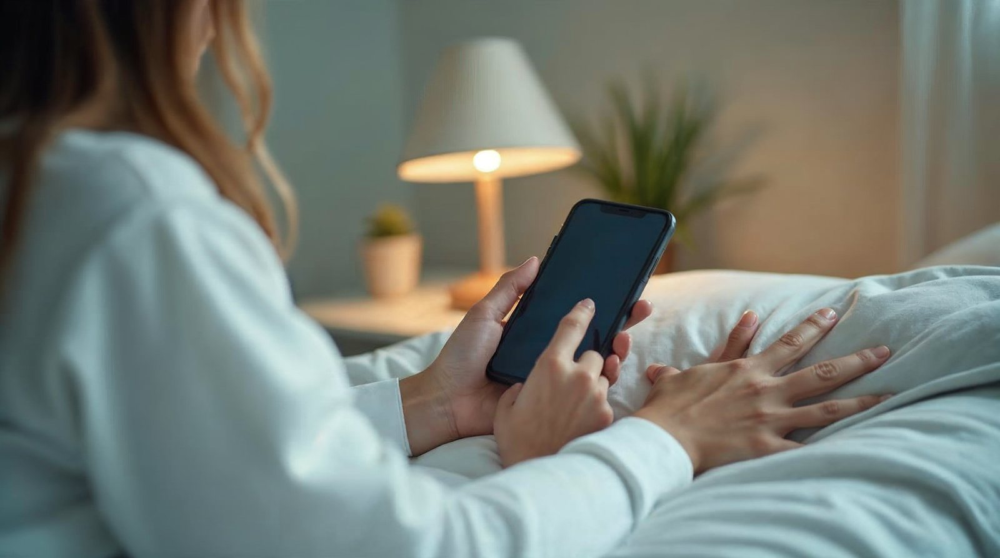
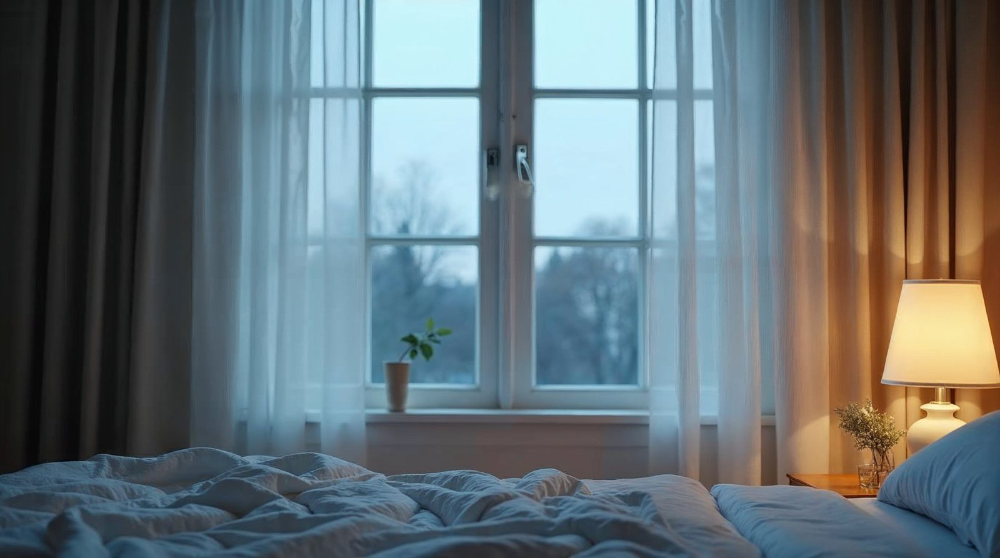
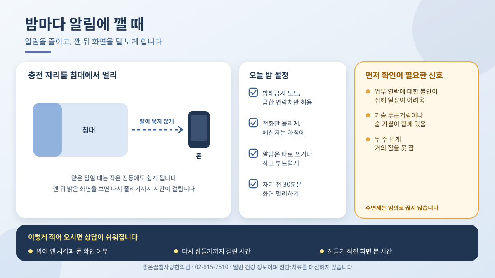

이종호 한의사 감수좋은꿈참사랑한의원 대표원장 (한의사 면허번호 19769)발행 2026-11-23 · 수정 2026-11-26
이 글의 차례
- 왜 이런 불편이 생길 수 있나요
- 알림 때문인지, 다른 원인이 겹친 것인지 어떻게 구분하나요
- 화면 확인 습관은 왜 쉽게 끊기지 않을까요
- 먼저 이렇게 여쭙니다
- 일상에서 먼저 해 볼 수 있는 것
- 방해금지 설정은 이렇게 해 보세요
- 폰을 침실 밖에 두기 어렵다면
- 상황별 예시
- 스스로 점검해 보세요
- 낮 동안 알림과 거리를 두는 연습은 어떻게 하나요
- 저녁 화면 시간은 어떻게 줄여 갈까요
- 깨고 나서 다시 잠들기까지, 이렇게 해 보세요
- 가족과 함께 정하면 왜 지키기 쉬울까요
- 잠 기록은 이렇게 적어 보세요
- 한의원에서 함께 살필 수 있는 경우
- 상담 전에 알아 두시면 좋은 것
- 얼마나 지켜보고 언제 상담할까요
- 이렇게 기록해 오시면 상담이 쉬워집니다
- 이런 증상은 먼저 확인이 필요합니다
- 관련 글
알림이 울리지 않아도 혹시 올까 봐 신경이 쓰이는 분이 많습니다. 새벽에 진동 한 번에 깨서 화면을 확인하면 그대로 잠이 달아나기도 합니다. 폰과 잠자리 사이에 거리를 두는 것만으로 잠이 이어지는 경우가 많고, 오늘 밤 바로 해 볼 수 있어 부담도 적습니다.
설정을 바꾸고 1~2주가 지나도 밤에 깨는 일이 줄지 않거나 알림이 없는데도 같은 시각에 눈이 떠진다면, 폰보다 잠 자체와 낮의 긴장을 함께 살펴볼 때입니다.
왜 이런 불편이 생길 수 있나요
- 잠은 밤새 얕아졌다 깊어졌다를 반복하는데, 얕은 잠일 때는 작은 진동에도 쉽게 깹니다.
- 깬 뒤 화면의 밝은 빛을 보면 다시 졸음이 오기까지 시간이 걸립니다.
- 메시지 내용을 읽으면 답장이나 할 일이 떠올라 생각이 이어지고 머리가 깨어납니다.
- 연락을 놓치면 안 된다는 긴장이 있으면 잠든 뒤에도 몸이 완전히 쉬지 못하고 작은 소리에 쉽게 깹니다.
- 알림에 깨는 밤이 반복되면 알림이 없는 날에도 비슷한 시각에 저절로 눈이 떠지는 습관이 남기도 합니다.
알림 때문인지, 다른 원인이 겹친 것인지 어떻게 구분하나요
- 폰을 다른 방에 두고 잔 날 밤에 깨는 횟수가 눈에 띄게 줄었다면, 알림과 화면 확인이 잠을 끊는 중심일 가능성이 큽니다.
- 폰을 멀리 두었는데도 비슷한 시각에 깬다면 알림은 계기였을 뿐, 잠의 리듬이나 낮의 긴장을 함께 살펴봅니다.
- 깨는 이유가 알림보다 화장실이나 더위, 갈증이라면 저녁 수분 섭취와 방 온도를 먼저 점검합니다.
- 알림이 거의 없는 주말에도 잠이 얕다면 평일에 쌓인 피로나 잠드는 시각의 흔들림이 더 큰 몫일 수 있습니다.
- 아이 울음이나 가족의 움직임처럼 폰 말고도 밤에 깨우는 소리가 있다면, 알림만 줄여서는 잠이 이어지기 어려워 침실 환경 전체를 함께 봅니다.
화면 확인 습관은 왜 쉽게 끊기지 않을까요
깨어서 폰을 집는 행동은 대개 생각보다 먼저 손이 움직입니다. 낮 동안 알림이 울릴 때마다 확인하는 일을 수백 번 반복하다 보면, 진동 소리와 손을 뻗는 동작이 거의 한 덩어리로 묶이기 때문입니다.
게다가 화면 속에는 확인할 거리가 끝없이 이어집니다. 메시지 하나만 보려다 다른 앱의 소식까지 넘겨 보게 되고, 그사이 밝은 빛과 새로운 정보가 머리를 깨웁니다. 의지가 약해서가 아니라, 손이 닿는 곳에 폰이 있으면 누구라도 그렇게 되기 쉽습니다.
그래서 마음을 다잡기보다 손이 닿지 않게 거리를 두는 쪽이 훨씬 수월합니다. 충전 위치를 옮기고 방해금지를 예약해 두는 것은 의지에 기대지 않고 환경을 바꾸는 방법입니다.
먼저 이렇게 여쭙니다
- 밤에 알림이 몇 번 정도 울리나요?
- 깬 뒤 화면을 확인하고 다시 잠들기까지 얼마나 걸리나요?
- 침대 옆에 폰을 두고 자나요?
- 업무 때문에 밤에도 연락을 받아야 하나요?
- 알림을 꺼 두면 오히려 불안해서 자꾸 화면을 켜 보게 되나요?

일상에서 먼저 해 볼 수 있는 것
- 밤 시간대에는 방해금지 모드로 두고 급한 연락처만 허용하기
- 방해금지는 매일 같은 시각에 저절로 켜지고 꺼지도록 예약해 두기
- 충전 위치를 침대에서 팔이 닿지 않는 곳으로 옮기기
- 꼭 받아야 하는 연락은 전화만 울리게 하고 메신저 알림은 아침에 확인하기
- 단체 대화방과 쇼핑·광고·게임 알림은 꺼 두고 꼭 필요한 앱만 알림 남기기
- 알람은 따로 쓰거나 소리를 부드럽고 작게 바꾸기
- 자기 전 30분은 화면을 멀리하고 하루를 정리하기
- 깬 뒤 20분이 지나도 잠이 오지 않으면 화면을 켜지 말고 잠시 일어나 조명을 낮춘 곳에서 쉬다가 졸릴 때 다시 눕기
방해금지 설정은 이렇게 해 보세요
기기마다 이름과 위치는 조금씩 다르지만, 대부분 아래 순서로 설정할 수 있습니다. 밤에 졸린 상태로 하기보다 낮에 차분히 맞춰 두세요.
- 1. 설정에서 방해금지 또는 집중 모드를 찾아 켤 시각과 끌 시각을 예약합니다. 예를 들어 밤 11시부터 아침 7시까지로 정합니다.
- 2. 예외 연락처에 가족이나 꼭 받아야 할 사람만 넣습니다. 너무 많이 넣으면 방해금지의 의미가 줄어듭니다.
- 3. 같은 번호로 짧은 시간에 여러 번 전화가 오면 울리게 하는 기능이 있다면 켜 둡니다. 정말 급한 연락은 놓치지 않을 수 있습니다.
- 4. 잠금 화면에 알림이 켜졌다 꺼지는 기능도 함께 끄면, 소리가 없어도 화면 불빛에 깨는 일이 줄어듭니다.
- 5. 일주일쯤 써 본 뒤 놓친 연락이 있었는지 확인하고 예외 목록을 다듬습니다.
폰을 침실 밖에 두기 어렵다면
혼자 살거나 가족 연락 때문에 폰을 곁에 두어야 하는 분도 있습니다. 이럴 때는 거리와 방향으로 조절해 보세요.
- 침대 머리맡 대신 방 반대편 서랍장 위처럼 일어나야 닿는 곳에 둡니다.
- 화면이 아래로 가게 엎어 두고, 진동은 끄고 소리만 작게 남깁니다.
- 매트리스나 나무 협탁 위에 바로 두면 진동이 크게 울려 퍼지니, 수건을 깔거나 천 위에 둡니다.
- 시계 대용으로 폰을 보는 습관이 있다면 작은 탁상시계를 따로 두어 폰을 집을 이유를 하나 줄입니다.

상황별 예시
- 예를 들어 업무 메신저가 밤늦게까지 울리는 직장인이라면, 팀과 '밤 10시 이후 급한 일은 전화로'처럼 연락 원칙을 미리 정해 두고, 그 시각 이후에는 메신저 알림을 끈 채 전화만 울리게 설정해 봅니다. 놓칠까 봐 불안한 마음이 줄어야 몸도 잠자리에서 경계를 풀기 쉽습니다.
- 예를 들어 단체 대화방 알림이 새벽까지 이어지는 수험생이라면, 공부를 마치는 시각부터 아침까지 대화방 알림을 꺼 두고 폰은 책상 위에서 충전합니다. 알람을 따로 맞춰 두면 잠자리에서 폰을 집어 들 일도 줄어듭니다.
- 예를 들어 야간 근무를 마치고 낮에 자야 하는 분이라면, 낮에는 택배 도착 문자와 광고 전화, 업무 연락이 몰려 깨기 쉽습니다. 잠드는 시각에 맞춰 방해금지를 따로 예약하고 꼭 받아야 할 연락처만 예외로 둔 뒤, 암막 커튼으로 빛을 막고 폰 화면은 엎어 둡니다.
스스로 점검해 보세요
- 밤에 알림 때문에 깨는 날이 일주일에 세 번 이상이다.
- 깨면 습관처럼 화면을 켜서 메시지를 확인한다.
- 화면을 본 뒤 다시 잠들기까지 30분 넘게 걸린다.
- 알림이 오지 않았는데도 진동이 울린 것 같아 폰을 확인한 적이 있다.
- 폰이 손에 닿지 않는 곳에 있으면 불안해서 잠들기 어렵다.
- 잠들기 직전까지 누운 채 화면을 본다.
- 아침에 일어나면 눈이 뻑뻑하고 목과 어깨가 굳어 있다.
낮 동안 알림과 거리를 두는 연습은 어떻게 하나요
밤에만 폰과 멀어지려고 하면 생각보다 어렵습니다. 낮 내내 알림이 울릴 때마다 바로 확인하던 몸은 밤에도 같은 반응을 이어 가기 때문입니다. 낮에 조금씩 거리를 두는 연습이 밤의 잠을 지키는 데도 도움이 됩니다.
- 일하거나 공부할 때 30분이나 한 시간 단위로 알림을 묶어서 확인해 봅니다.
- 식사할 때는 폰을 가방이나 다른 방에 두고, 먹는 데만 집중해 봅니다.
- 앱마다 알림이 꼭 필요한지 한 번씩 점검하고, 없어도 되는 알림은 꺼 둡니다.
- 메신저는 읽음 표시를 바로 남기지 않아도 괜찮다고 스스로 허락해 둡니다. 답장을 미뤄도 큰일이 나지 않는다는 경험이 쌓이면 연락에 대한 긴장도 조금씩 줄어듭니다.
저녁 화면 시간은 어떻게 줄여 갈까요
자기 직전까지 누운 채 화면을 보는 습관은 한 번에 끊기보다 조금씩 앞당기는 편이 수월합니다. 첫 주에는 잠들기 15분 전, 다음 주에는 30분 전에 폰을 내려놓는 식으로 시간을 늘려 보세요.
폰을 내려놓은 자리에는 대신할 일을 하나 정해 둡니다. 종이책 몇 쪽, 가벼운 스트레칭, 다음 날 입을 옷 챙기기처럼 화면 없이 할 수 있는 짧은 일이면 됩니다. 빈 시간으로 두면 손이 다시 폰으로 가기 쉽습니다. 처음 며칠은 허전해도 한 주쯤 지나면 그 시간이 오히려 기다려진다는 분도 있습니다.
깨고 나서 다시 잠들기까지, 이렇게 해 보세요
알림에 깼더라도 화면을 켜지 않으면 다시 잠드는 데 걸리는 시간이 짧아지는 경우가 많습니다. 일단 손을 이불 안에 넣고 눈을 감은 채 숨을 천천히 내쉬어 보세요.
무슨 연락일까 하는 궁금함이 올라오면 '급한 사람은 전화를 걸 것이다'라고 스스로에게 말해 두세요. 방해금지 예외를 미리 정해 두었다면 이 말에 기댈 근거가 생겨 마음이 한결 놓입니다.
어깨와 턱에 힘이 들어가 있다면 내쉬는 숨에 맞춰 하나씩 풀어 줍니다. 20분이 지나도 잠이 오지 않는다면 잠시 일어나 어두운 거실에서 쉬다가 졸릴 때 돌아갑니다.
가족과 함께 정하면 왜 지키기 쉬울까요
혼자만 폰을 멀리 두려고 하면, 옆에서 다른 가족이 화면을 보고 있을 때 마음이 흔들리기 쉽습니다. 한 사람의 폰 알림이 같은 방에서 자는 다른 사람을 깨우는 일도 흔합니다.
밤 몇 시 이후에는 모두 거실에서 폰을 충전하자는 식으로 가족이 함께 규칙을 정해 보세요. 거실 한쪽에 충전 자리를 하나 마련해 두면 자연스럽게 습관이 됩니다. 아이가 있다면 보호자가 먼저 지키는 모습을 보여 주는 것이 말로 하는 것보다 훨씬 큰 힘이 됩니다.
가족 단체 대화방이 밤늦게까지 이어진다면, 밤에는 급한 일만 전화로 하자고 가볍게 제안해 보는 것도 방법입니다. 서로의 잠을 지켜 주자는 말은 생각보다 쉽게 받아들여지는 경우가 많습니다.
잠 기록은 이렇게 적어 보세요
아침에 한 줄로 충분합니다. 예를 들어 '폰 위치: 서랍장, 방해금지 23시~7시, 밤에 깬 횟수 1번, 폰 확인 안 함, 다시 잠들기까지 10분쯤'처럼 적어 봅니다.
설정을 바꾸기 전 며칠과 바꾼 뒤 며칠을 나란히 놓고 보면 무엇이 달라졌는지 스스로도 알 수 있습니다. 진료 때 함께 보면 다음에 무엇을 조정할지 정하기도 쉽습니다.
한의원에서 함께 살필 수 있는 경우
- 알림에 깰 때마다 다시 잠들기 어려운 경우 긴장의 정도와 수면 시각을 함께 살핍니다.
- 밤에 화면을 보는 시간이 길어 눈이 피로하고 목이 굳는 경우 자세와 눈 피로를 함께 살핍니다.
- 연락이 올까 봐 마음이 놓이지 않는 경우 마음의 부담과 낮의 생활을 함께 살핍니다.
좋은꿈참사랑한의원에서는 첫 방문 때 맥부터 짚습니다. 맥을 짚으면서 밤에 깨는 시각과 그 뒤의 모습, 폰을 두는 자리, 낮 동안 연락에 매여 지내는 정도를 여쭙고, 필요하다고 판단될 때 혀와 배를 살펴 몸의 긴장과 소화 상태를 확인합니다. 가슴 두근거림이나 얼굴로 오르는 열감, 손발의 냉기처럼 긴장이 드러나는 곳도 함께 여쭙습니다.
화면을 오래 보느라 목과 어깨가 굳어 있다면 움직임도 함께 봅니다. 그 뒤 생활에서 해 볼 것을 정하고, 필요하면 침이나 한약 상담을 이어 갑니다. 귀가 전에는 오늘 밤 바로 바꿔 볼 폰 설정과 충전 위치도 함께 정리해 드립니다. 다음에 오시면 지난번 이야기를 이어서 여쭙고 밤에 깬 기록을 함께 봅니다.
상담 전에 알아 두시면 좋은 것
한약 상담을 하게 되면 지금 드시는 약과 영양제를 먼저 여쭙고 확인한 뒤에 정합니다. 처방받은 약은 임의로 끊거나 줄이지 마시고, 임신 중이거나 임신 가능성이 있다면 먼저 말씀해 주세요. 이 경우 산부인과와도 함께 상의하시길 권합니다.
폰 설정을 어떻게 해 두었는지 화면을 보여 주셔도 괜찮습니다. 지금 어떤 알림이 밤에 울리는지 함께 보면 무엇부터 정리할지 고르기가 쉬워집니다.

얼마나 지켜보고 언제 상담할까요
- 방해금지 예약과 충전 위치 바꾸기를 1~2주 이어 가며 밤에 깬 시각과 그때 폰을 확인했는지 적어 봅니다.
- 알림을 줄였는데도 2주 넘게 밤에 두 번 이상 깨는 날이 일주일에 세 번 이상이라면 상담을 받아 보세요.
- 알림이 없어도 새벽 같은 시각에 깨는 일이 3주 넘게 이어진다면 잠 자체를 함께 살펴볼 때입니다.
이렇게 기록해 오시면 상담이 쉬워집니다
- 일주일 정도 밤에 깬 시각과 그때 폰을 확인했는지
- 다시 잠들기까지 걸린 시간
- 잠들기 직전 화면을 본 시간
- 밤에 울린 알림의 종류(업무·단체 대화방·광고 등)
- 복용 중인 수면제나 다른 약
이런 증상은 먼저 확인이 필요합니다
- 가슴 두근거림이나 숨 가쁨이 함께 있는 경우
- 연락에 대한 불안이 심해 일상이 어렵거나, 스스로를 해칠 생각이 드는 경우(☎ 109로 바로 연락)
이런 신호가 있으면 한의원보다 가까운 병원이나 응급실을 먼저 찾으세요.
관련 글
- 밤에 자꾸 시계를 보게 될 때는 어떻게 하나요?
- 작은 소리에도 자주 깨는 분은 어떤 점을 살펴보나요?
- 재택근무를 시작한 뒤 출퇴근 경계가 사라져 잠 리듬이 흐트러질 때는 어떻게 하나요?

여쭙는 것
- 밤에 알림이 몇 번 정도 울리나요?
- 깬 뒤 화면을 확인하고 다시 잠들기까지 얼마나 걸리나요?
- 침대 옆에 폰을 두고 자나요?
생활에서 해 볼 것
- 밤 시간대에는 방해금지 모드로 두고 급한 연락처만 허용하기
- 방해금지는 매일 같은 시각에 저절로 켜지고 꺼지도록 예약해 두기
- 충전 위치를 침대에서 팔이 닿지 않는 곳으로 옮기기
한의원에서 함께 살필 것
- 알림에 깰 때마다 다시 잠들기 어려운 경우 긴장의 정도와 수면 시각을 함께 살핍니다.
- 밤에 화면을 보는 시간이 길어 눈이 피로하고 목이 굳는 경우 자세와 눈 피로를 함께…
- 연락이 올까 봐 마음이 놓이지 않는 경우 마음의 부담과 낮의 생활을 함께 살핍니다.
먼저 확인이 필요한 신호
- 가슴 두근거림이나 숨 가쁨이 함께 있는 경우
- 연락에 대한 불안이 심해 일상이 어렵거나, 스스로를 해칠 생각이 드는 경우(109로…
한눈에 보는 표
| 구분 | 핵심 |
|---|---|
| 여쭙는 것 | 밤에 알림이 몇 번 정도 울리나요? 깬 뒤 화면을 확인하고 다시 잠들기까지 얼마나 걸리나요? |
| 생활에서 해 볼 것 | 밤 시간대에는 방해금지 모드로 두고 급한 연락처만 허용하기 방해금지는 매일 같은 시각에 저절로 켜지고 꺼지도록 예약해 두기 |
| 한의원에서 함께 살필 것 | 알림에 깰 때마다 다시 잠들기 어려운 경우 긴장의 정도와 수면 시각을 함께 살핍니다. 밤에 화면을 보는 시간이 길어 눈이 피로하고 목이 굳는 경우 자세와 눈 피로를 함께 살핍니다. |
| 먼저 확인이 필요한 신호 | 가슴 두근거림이나 숨 가쁨이 함께 있는 경우 연락에 대한 불안이 심해 일상이 어렵거나, 스스로를 해칠 생각이 드는 경우(109로 바로 연락) |
자주 묻는 질문
진동도 잠에 영향을 주나요?
진동 소리와 침대로 전해지는 떨림이 얕은 잠을 깨우는 경우가 있어 침대에서 떨어진 곳에 두면 도움이 됩니다.
알람 때문에 폰을 두고 자야 해요.
알람 용도라면 볼륨을 낮추고 화면이 뒤집히게 두거나 별도 알람 시계를 쓰는 방법이 있습니다.
화면 밝기를 낮추는 야간 모드는 도움이 되나요?
눈부심을 줄이는 데는 도움이 될 수 있지만, 화면을 보는 시간 자체를 줄이는 것이 먼저입니다.
가족 연락은 밤에도 받아야 하는데 어떻게 하나요?
가족 연락처만 방해금지의 예외로 두면 꼭 필요한 연락은 받으면서 다른 알림은 막을 수 있습니다. 설정은 기기마다 조금씩 다르니 낮에 미리 맞춰 두세요.
좋은꿈참사랑한의원은 재진 때 지난번 이야기부터 이어서 여쭙니다. 진료시간과 예약은 오시는 길에서 확인하세요.
어디서 상담받을 수 있나요?
좋은꿈참사랑한의원은 서울 동작구 만양로2길 2 신성빌딩 3층·5층(서울 동작구 상도동, 7호선 상도역 3번 출구 근처)에 있습니다. 한의사 3명(이종호 대표원장, 조영기 수석진료원장, 정원영 진료원장)이 진료합니다. 진료시간은 평일 09:30~20:00(점심 13:00~14:00), 토·일·공휴일 09:30~15:00이며, 방문 전 전화로 확인을 권합니다. 예약은 네이버 예약, 카카오톡 상담, 전화 02-815-7510로 받습니다.
이 글은 일반적인 건강 정보이며 개인의 진단이나 치료를 대신하지 않습니다. 증상이 있거나 복용 중인 약이 있다면 진료를 통해 확인하세요. 치료 효과는 개인마다 다를 수 있습니다.
작성 기준: 일반적으로 알려져 있는 건강 정보를 참고해 정리했습니다(대표원장 감수). 증상 기록은 1~2주 동안 하루 1회, 비슷한 시간에 적어 오시면 지난 상태와 비교하기 쉽습니다.